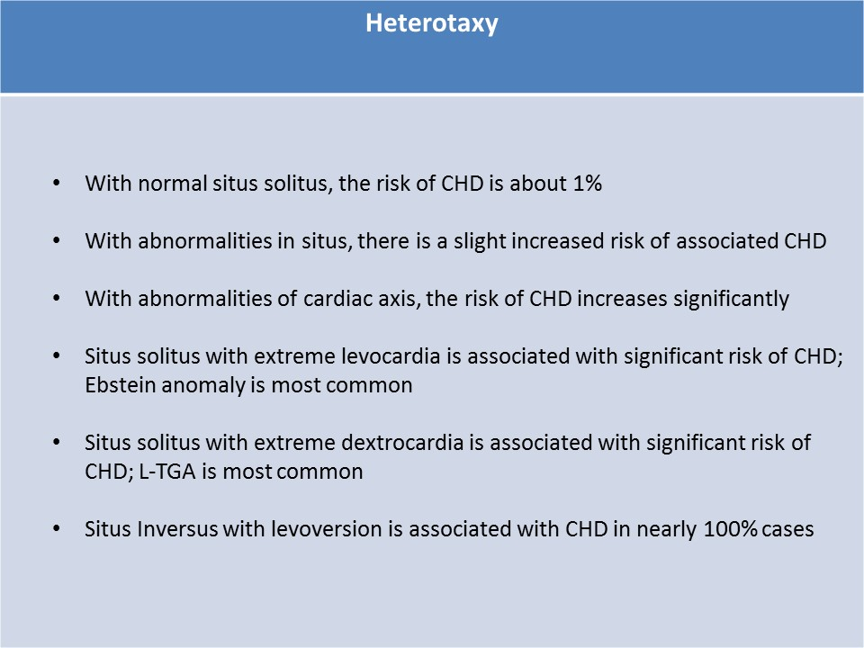
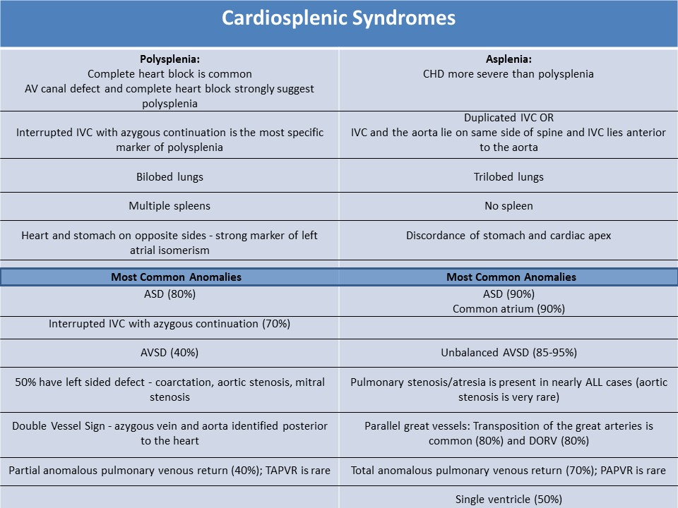
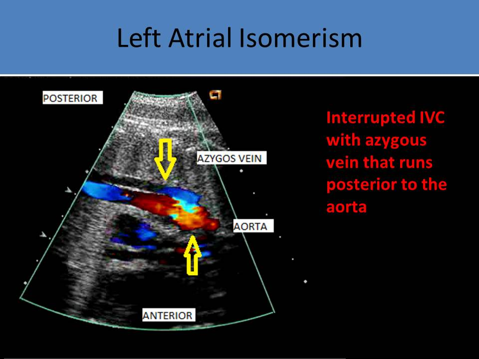

.jpg)
Heterotaxy
Definition:
- Inconsistent relationship between the atria and viscera
- Midline development defect
- With normal situs solitus, the risk of CHD is about 1%
- Abnormalities in situs offer a slight increased risk of associated CHD
- When abnormalities of cardiac axis are identified, the risk of CHD increases significantly
- Abnormalities in cardiac position also increase the risk of CHD, but much less than abnormalities in cardiac axis
Three Types of Abdominal Situs:
Situs Solitus- Normal arrangement of abdominal organs
- Liver on the right, stomach on the left
- With heart on the left (levocardia) - very low risk of CHD
- With extreme levocardia
- risk of CHD increases
- Ebstein anomaly(#1), truncus arteriosus, pulmonary stenosis, coarctation, TOF, DORV and transposition
- With dextrocardia
- called dextroversion
- strong association with CHD
- 90% have corrected transposition
- also seen with pulmonary stenosis, VSD, AVSD, TOF and Ebstein anomaly
- Mirror image, stomach on the right and liver on the left
- 20% of cases associated with Kartagener syndrome
- With dextrocardia
- in most cases the atrial and visceral situs are concordant leading to dextrocardia
- CHD is not common
- With levoversion
- mirror image of situs solitus with dextroversion
- CHD seen in nearly 100% of cases
- Inverted corrected transposition is common, also associated with DORV and interrupted IVC
- Heterotaxy - Polysplenia or Asplenia
 
Left Atrial Isomerism (Polysplenia) :- Bilateral left sidedness: bilaterally placed organs display features of the normal left sided organs and absence of the right sided organs
- Left atrial appendage: finger-like appendage, pectinate muscles confined to the appendage
- Both lungs are left lungs = bilobed (left lungs normally have two lobes and right lobe has three lobes)
- Hyperarterial bronchi - pulmonary arteries course over the lung and then behind the bronchus
- Polysplenia: multiple spleens, not a consistent finding
- Higher incidence of CHD but findings are less severe than asplenia
- Only 10% of patients survive until adolescence
- Echo findings
- Structural defects, interrupted IVC with azygous continuation and complete heart block have high specificity for polysplenia
- AV canal defect and complete heart block also strongly suggest polysplenia
- Interrupted IVC with azygous continuation (70%)
- Most specific marker of polysplenia, rarely seen in asplenia
- Double Vessel Sign - azygos vein and aorta identified posterior to the heart
- Best evaluated in the sagittal view of the fetal body/chest
- Long vessel that courses parallel to the aorta to reach the SVC
- Complete heart block (65%)
- Complete disuniting of atrial and ventricular rate
- Both atrial and ventricular rates are often low
- Possible fetal hydrops, cardiomegaly, ventricular hypertrophy and fetal death
- Both atria have morphological features of the left atrium
- Axis of heart: more leftward
- Heart and stomach on opposite sides - strong marker of left atrial isomerism
- Liver most commonly identified on the left side
- ASD (80%)
- AVSD (50%)
- 50% have left sided defect - coarctation, aortic stenosis, mitral stenosis
- Bilateral SVC (40%)
- Partial anomalous pulmonary venous return (40%); TAPVR is rare
- Bilateral right sidedness: bilaterally placed organs display features of the normal right sided organs and absence of the right sided organs
- Right atrial appendage: broad, triangular shape appendage, pectinate muscles extending to the atrioventricular junction
- Both lungs are right lungs = trilobed
- Bronchus is epiarterial - pulmonary artery is anterior to the main bronchus
- Asplenia: no spleen
- Liver is located midline
- CHD more severe than polysplenia
- Most patients die before 1 year of age
- Echo findings
- Both atria have morphological features of the right atrium
- Discordance of stomach and cardiac apex
- IVC and the aorta lie on same side of spine and IVC lies anterior to the aorta
- Duplicated IVC
- ASD (90%)
- Unbalanced AVSD (85-95%)
- Common atrium (90%)
- Transposition of the great arteries is common (80%)
- Pulmonary stenosis/atresia is present in nearly all cases (aortic stenosis is very rare)
- DORV with pulmonary stenosis or pulmonary atresia (75%)
- Total anomalous pulmonary venous return (70%); PAPVR is rare
- Single ventricle (50%)

LAI-Azygous continuation
LAI-Azygous continuation
LAI - Complete heart block with AVC